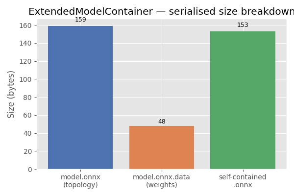

Note
Go to the end to download the full example code.
ExtendedModelContainer: large-initializer ONNX models#
ExtendedModelContainer
extends the standard onnx.model_container.ModelContainer to handle
large weight tensors — numpy arrays stored separately from the main
.onnx file instead of being serialised inside the protobuf.
This is the typical pattern when exporting models whose weights exceed the 2 GB protobuf limit or when you want to keep the metadata (graph topology) separate from the raw weight bytes for faster loading or partial inspection.
The example shows:
Building an ONNX model that references a large external initializer.
Wrapping it in an
ExtendedModelContainerand saving to disk.Reloading the saved model and running it with ONNX Runtime.
Inlining external data back with
get_model_with_data.Defining weights with a numpy array.
Converting the container to an
onnx_ir.Modelviato_ir.Plot: comparing the serialised sizes of the container
.onnxfile, the separate weight file, and a self-contained model.
import tempfile
import os
import numpy as np
import onnx
import onnx.helper as oh
import onnxruntime
from yobx.container import ExtendedModelContainer
TFLOAT = onnx.TensorProto.FLOAT
1. Build an ONNX model that references an external initializer#
We craft a tiny graph Y = X + weight where weight is stored as an
external tensor (data_location = EXTERNAL) in the protobuf. The
actual bytes are held in ExtendedModelContainer.large_initializers under
a symbolic key ("#weight" here) — the same key that the
external_data.location field in the protobuf points to.
weight_data = np.arange(12, dtype=np.float32).reshape(3, 4)
# Build the TensorProto shell (no raw bytes, just metadata + external pointer)
weight_proto = onnx.TensorProto()
weight_proto.name = "weight"
weight_proto.data_type = TFLOAT
weight_proto.data_location = onnx.TensorProto.EXTERNAL
weight_proto.dims[:] = list(weight_data.shape)
ext_entry = weight_proto.external_data.add()
ext_entry.key = "location"
ext_entry.value = "#weight" # symbolic key used in large_initializers
x_info = oh.make_tensor_value_info("X", TFLOAT, [3, 4])
y_info = oh.make_tensor_value_info("Y", TFLOAT, [3, 4])
add_node = oh.make_node("Add", inputs=["X", "weight"], outputs=["Y"])
graph = oh.make_graph([add_node], "add_graph", [x_info], [y_info], initializer=[weight_proto])
model_proto = oh.make_model(graph, opset_imports=[oh.make_opsetid("", 18)], ir_version=10)
# Assemble the container
container = ExtendedModelContainer()
container.model_proto = model_proto
container.set_large_initializers({"#weight": weight_data})
print("model_proto graph inputs :", [i.name for i in model_proto.graph.input])
print("model_proto initializers :", [t.name for t in model_proto.graph.initializer])
print("large_initializers keys :", list(container.large_initializers.keys()))
model_proto graph inputs : ['X']
model_proto initializers : ['weight']
large_initializers keys : ['#weight']
2. Save the container to disk#
save writes two files:
model.onnx— the graph topology (protobuf, small).model.onnx.data— the concatenated raw weight bytes (large).
The returned ModelProto is a copy of the proto with offset/length
fields filled in so the weight file can be memory-mapped later.
tmpdir = tempfile.mkdtemp(prefix="yobx_ext_container_")
model_path = os.path.join(tmpdir, "model.onnx")
data_path = model_path + ".data"
saved_proto = container.save(model_path, all_tensors_to_one_file=True)
onnx_size = os.path.getsize(model_path)
data_size = os.path.getsize(data_path)
print(f"model.onnx : {onnx_size:,} bytes")
print(f"model.onnx.data : {data_size:,} bytes (raw float32: {weight_data.nbytes} bytes)")
model.onnx : 159 bytes
model.onnx.data : 48 bytes (raw float32: 48 bytes)
3. Reload and run with ONNX Runtime#
load reads the protobuf
and immediately resolves all external tensors into
large_initializers. After loading, the container is fully
self-contained in memory.
To run the model with ONNX Runtime we call
get_model_with_data
which inlines every external tensor back into the protobuf as raw_data.
loaded = ExtendedModelContainer().load(model_path)
inline_proto = loaded.get_model_with_data()
sess = onnxruntime.InferenceSession(
inline_proto.SerializeToString(), providers=["CPUExecutionProvider"]
)
x_val = np.ones((3, 4), dtype=np.float32)
(y_val,) = sess.run(None, {"X": x_val})
print("X :\n", x_val)
print("weight :\n", weight_data)
print("Y = X+w :\n", y_val)
assert np.allclose(y_val, x_val + weight_data), "Mismatch between expected and actual output!"
X :
[[1. 1. 1. 1.]
[1. 1. 1. 1.]
[1. 1. 1. 1.]]
weight :
[[ 0. 1. 2. 3.]
[ 4. 5. 6. 7.]
[ 8. 9. 10. 11.]]
Y = X+w :
[[ 1. 2. 3. 4.]
[ 5. 6. 7. 8.]
[ 9. 10. 11. 12.]]
4. Inline external data with get_model_with_data#
get_model_with_data returns a
plain onnx.ModelProto where every initializer that was previously
stored externally is now embedded as raw_data. This is convenient
when you need a fully self-contained protobuf — for example to pass it
to a tool that does not understand external tensors.
inline_proto2 = container.get_model_with_data()
for init in inline_proto2.graph.initializer:
assert len(init.raw_data) > 0, f"Initializer {init.name!r} still has no raw_data!"
print(f"Initializer '{init.name}': {len(init.raw_data)} bytes inlined")
Initializer 'weight': 48 bytes inlined
5. Defining weights with numpy#
large_initializers accepts plain numpy.ndarray objects.
The helper below builds a minimal Y = X + weight model whose
weight initializer is stored externally, then verifies the result.
def make_external_proto(name: str, shape: list) -> onnx.TensorProto:
"""Builds a TensorProto shell that points to an external location *name*."""
proto = onnx.TensorProto()
proto.name = name
proto.data_type = TFLOAT
proto.data_location = onnx.TensorProto.EXTERNAL
proto.dims[:] = shape
entry = proto.external_data.add()
entry.key = "location"
entry.value = f"#{name}"
return proto
def make_add_model(weight_shape: list) -> onnx.ModelProto:
"""Builds ``Y = X + weight`` with *weight* stored as external data."""
x_vi = oh.make_tensor_value_info("X", TFLOAT, weight_shape)
y_vi = oh.make_tensor_value_info("Y", TFLOAT, weight_shape)
node = oh.make_node("Add", inputs=["X", "weight"], outputs=["Y"])
weight_ext = make_external_proto("weight", weight_shape)
g = oh.make_graph([node], "add_graph", [x_vi], [y_vi], initializer=[weight_ext])
return oh.make_model(g, opset_imports=[oh.make_opsetid("", 18)], ir_version=10)
shape = [2, 3]
np_weight = np.array([[1, 2, 3], [4, 5, 6]], dtype=np.float32) # you can use torch as well
container_np = ExtendedModelContainer()
container_np.model_proto = make_add_model(shape)
container_np.set_large_initializers({"#weight": np_weight})
proto_np = container_np.get_model_with_data()
sess_np = onnxruntime.InferenceSession(
proto_np.SerializeToString(), providers=["CPUExecutionProvider"]
)
x_in = np.ones(shape, dtype=np.float32)
(out_np,) = sess_np.run(None, {"X": x_in})
print("numpy weight result:\n", out_np)
assert np.allclose(out_np, x_in + np_weight)
numpy weight result:
[[2. 3. 4.]
[5. 6. 7.]]
7. Plot: serialised size breakdown#
The bar chart below compares the sizes of the three artefacts written to disk: the ONNX topology file, the separate weight file, and a fully self-contained ONNX file (topology + weights merged).
import matplotlib.pyplot as plt # noqa: E402
self_contained_size = inline_proto.ByteSize()
labels = ["model.onnx\n(topology)", "model.onnx.data\n(weights)", "self-contained\n.onnx"]
sizes = [onnx_size, data_size, self_contained_size]
colors = ["#4c72b0", "#dd8452", "#55a868"]
fig, ax = plt.subplots(figsize=(6, 4))
bars = ax.bar(labels, sizes, color=colors)
ax.set_ylabel("Size (bytes)")
ax.set_title("ExtendedModelContainer — serialised size breakdown")
for bar, size in zip(bars, sizes):
ax.text(
bar.get_x() + bar.get_width() / 2,
bar.get_height() * 1.02,
f"{size:,}",
ha="center",
va="bottom",
fontsize=9,
)
plt.tight_layout()
plt.show()

Total running time of the script: (0 minutes 0.090 seconds)
Related examples

MiniOnnxBuilder: serialize tensors to an ONNX model